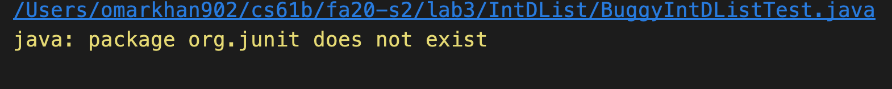
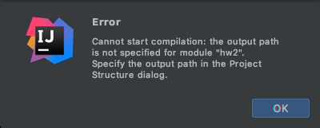
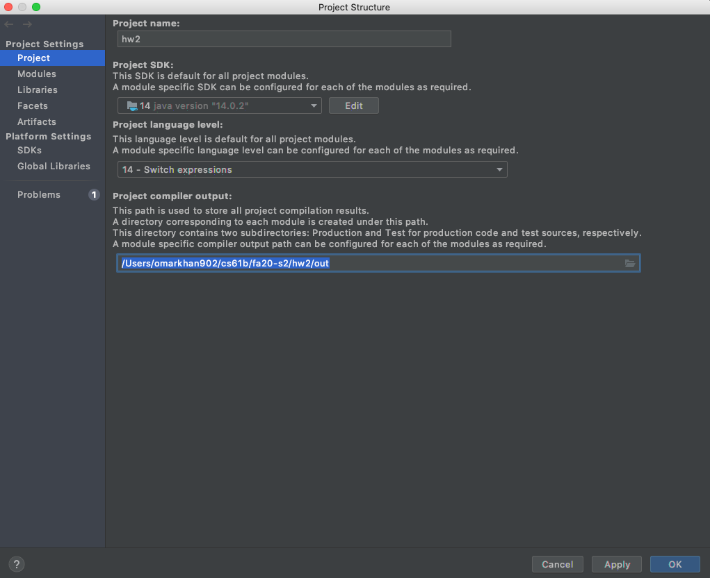

IntelliJ 常见问题
本文档旨在帮助您解决在 IntelliJ 中经常遇到的奇怪技术故障场景（WTFS）。随着问题的出现，本文档将不断补充内容。
无法运行Java文件/文件不显示为Java文件

如果您的文件看起来像这样，那么您还没有正确导入项目。
要修复此问题，您必须简单地将最外层的文件夹（那是您的作业文件夹，在本例中是
proj2ab
）右键单击，然后向下滚动到"Mark directory as …"并点击"Sources Root"。它看起来像这样：

对于大多数作业，您可能需要对
src
文件夹执行此操作，并将
tests
文件夹标记为
Test Sources Root
。您的
src
文件夹应该是蓝色的，而
tests
文件夹应该是绿色的。
有关导入新项目的其他说明，请参阅 作业工作流程 。
JUnit相关内容在IntelliJ中显示为红色

这意味着您忘记将CS 61B的
javalib
添加为该项目的库！
由于您忘记了导入它们，IntelliJ无法找到JUnit特定的内容，如
@Test
或
assertEquals
。
每次开始新作业时（不幸的是，每次都必须）您必须重新添加
javalib
。为此，只需转到"File" -> "项目 Structure" -> "Libraries"并添加仓库内的javalib。有关添加Java库的更多说明，请参阅
实验2设置
。
package org.junit does not exist

这种情况有时会在 IntelliJ 中发生：您已经添加了正确的库，但无法运行代码。要解决此问题，您需要将库作为直接依赖项添加到模块中。为此，请转到"File" -> "项目 Structure" -> "模块" -> "Dependencies"，然后点击左下角的"+"图标并选择"JARs or directories"。现在，选中您的
javalib
文件夹中的每个
.jar
文件并添加它们。以下是添加 JAR 之前设置的样子：

未指定输出路径

IntelliJ将所有编译后的Java
.class
文件放在一个名为
out
的特殊文件夹中。您可能之前见过它。通常，IntelliJ能够确定将
out
文件夹放在哪里，但有时它无法确定，需要您的帮助。要指定输出路径，请转到：
"File" > "项目 Structure" > "项目" > "项目 compiler output"并简单添加输出路径。输出路径应为
path/to/assignment/out
的形式，其中前缀取决于您的作业路径（hw、lab、proj等），后缀必须是
/out
。作业2的示例：

一切看起来正常但仍然不工作！
有时最简单的事情就是全部重新做一遍。即使您知道自己刚刚正确地完成了所有事情，重新开始通常就能解决问题。首先关闭项目（"File" -> "Close Project"），退出IntelliJ应用程序，然后从头重新导入项目。
一切看起来都不对劲，什么都不工作！
有时候，最简单的事情就是全部重新做一遍。具体来说，我们需要清除Intellij的记忆，让它忘记我们的项目曾经存在过。
Intellij将项目信息存储为
.idea
文件夹和
.iml
文件。为了让它忘记我们的项目，我们将删除这些：
- 关闭项目（"File" -> "关闭 项目"）
- 退出Intellij
- 在文件资源管理器/Finder中，转到项目文件夹
-
现在，您需要显示隐藏文件，以便
.idea和.iml显示出来： -
删除您看到的任何
.idea文件夹和.iml文件 - 在Intellij中重新打开项目
此时，项目应该看起来正常，就像您第一次打开它一样（您需要重新导入库，如果有的话）。但是，如果事情仍然看起来不对，您可能需要执行以下操作：
- 打开项目结构（"File" -> "项目 Structure"）
-
在"项目"标签中：
- 设置SDK和语言级别
-
选择编译器输出文件夹为
<path>/<to>/<project>/out。您可能需要自己创建此文件夹
- 在"Modules"标签中：删除所有模块（如果有的话）。然后，使用默认设置创建一个新模块
-
在"Libraries"标签中：重新为项目导入库。
- 此时，返回并确保所有设置都已正确应用。验证一切看起来正确后，关闭项目结构
- 在左侧的项目侧边栏中，右键单击根文件夹并标记为源（右键单击 -> "Mark Directory as" -> "Sources Root"）